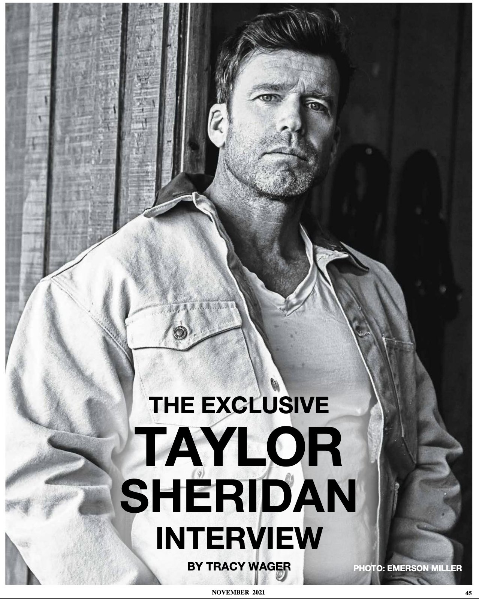
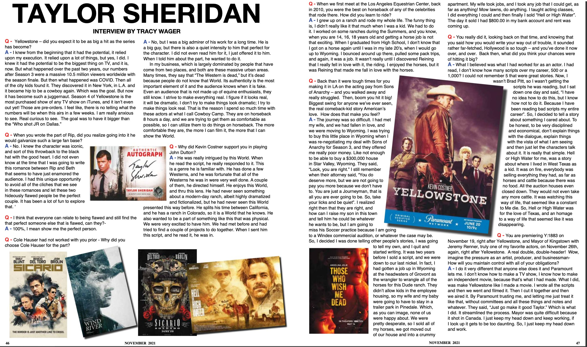
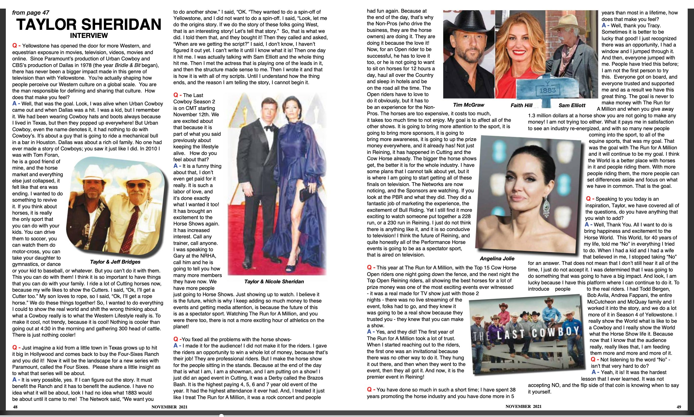

Tap image to zoom · Use arrows or swipe to navigate
I knew from the beginning that it had the potential, it relied upon my execution. It relied upon a lot of things, but yes, I did. I knew it had the potential to be the biggest thing on TV, and it is, now. But what happened over the past two years, our numbers after Season 3 were a massive 10.5 million viewers worldwide with the season finale. But then what happened was COVID. Then all of the city kids found it. They discovered it in New York, in L.A. and it became hip to be a cowboy again. Which was the goal. But now it has become such a juggernaut. Season 4 of Yellowstone is the most purchased show of any TV show on iTunes, and it isn't even out yet! Those are pre-orders. I feel like, there is no telling what the numbers will be when this airs in a few weeks. I am really anxious to see. Real curious to see. The goal was to have it bigger than the "Who shot JR on Dallas."
No. I knew the character was iconic, and sort of this throwback to the black hat with the good heart. I did not even know at the time that I was going to write this romance between Rip and Beth that seems to have just enamored the audience. I had this unique opportunity to avoid all of the clichés that we see in these romances and let these two hideously flawed people be the perfect couple. It has been a lot of fun to explore that.
I think that everyone can relate to being flawed and still find the that perfect someone else that is flawed, can they? 100%, I mean show me the perfect person.
No, but I was a big admirer of his work for a long time. He is a big guy, but there is also a quiet intensity to him that perfect for the character. I did not even read him for it, I just offered it to him. When I told him about the part, he wanted to do it.
In my business, which is largely dominated by people that have come from two places, and both are these massive urban areas. Many times, they say that "The Western is dead," but it's dead because people do not know that World. Its authenticity is the most important element of it and the audience knows when it is fake. Even an audience that is not made up of equine enthusiasts, they still know. I strive to make everything real. I figure if it looks real, it will be dramatic. I don't try to make things look dramatic; I try to make things look real. That is the reason I spend so much time with these actors at what I call Cowboy Camp. They are on horseback 8 hours a day, and we are trying to get them as comfortable as possible, so I can utilize them to do things on horseback. The more comfortable they are, the more I can film it, the more that I can show the World.
He was really intrigued by this World. When he read the script, he really responded to it. This is a genre he is familiar with. He has done a few Westerns, and he was fortunate that all of the Westerns he was in were very well done. A couple of them, he directed himself. He enjoys this World, and thru this lens. He had never seen something about a modern-day ranch, albeit highly dramatized and fictionalized, but he had never seen this World presented this way before. He splits his time between California, and he has a ranch in Colorado, so it is a World that he knows. He also wanted to be a part of something like this that was physical. We were very excited to have him. We had met before and had tried to find a couple of projects to do together. When I sent him this script, and he read it, he was in.
I grew up on a ranch and rode my whole life. The funny thing is, I didn't really like it that much when I was a kid. We had to do it. I worked on some ranches during the Summers, and you know, when you are 14, 16, 18 years old and getting a horse job is not that exciting. When I graduated from High School, I don't know that I got on a horse again until I was in my late 20's, when I would go up to Wyoming. I bounced around up there, pulled some pack trips, and again, it was a job. It wasn't really until I discovered Reining that I really fell in love with it, the riding. I enjoyed the horses, but it was Reining that made me fall in love with the horses.
The journey was so difficult. I had met my wife, and we had fallen in love, and we were moving to Wyoming. I was trying to buy this little place in Wyoming when I was re-negotiating my deal with Sons of Anarchy for Season 3, and they offered me really poor money. Like not enough to be able to buy a $300,000 house in Star Valley, Wyoming. They said, "Look, you are right." I still remember when their attorney said, "You do deserve more, but we are not going to pay you more because we don't have to. You are just a Journeyman, that is all you are ever going to be. So, take your licks and be quiet." I realized right then that they are right, and how can I raise my son in this town and tell him he could be whatever he wants to be, but I am going to miss his Soccer practice because I am going to a Windex commercial audition, or whatever the case may be. So, I decided I was done telling other people's stories, I was going to tell my own, and I quit and started writing. It was two years before I sold a script, and we were down to our last nickel. In fact, I had gotten a job up in Wyoming at the headwaters of Grovont as the wrangler to wrangle all of the horses for this Dude ranch. They didn't allow kids in the employee housing, so my wife and my baby were going to have to stay in a trailer park in Pinedale. Which, as you can imagine, none of us were happy about. We were pretty desperate, so I sold all of my horses, we got moved out of our house and into a crummy apartment. My wife took jobs, and I took any job that I could get, as far as anything! Mow lawns, do anything. I taught acting classes, I did everything I could and then finally I sold "Hell or High Water". The day it sold I had $800.00 in my bank account and rent was coming up.
What I believed was what I had worked for as an actor. I had read, I don't know how many scripts over my career, 500 or a 1,000? I could not remember 5 that were great stories. Now, I wasn't Brad Pitt, so I wasn't getting the scripts he was reading, but I sat down one day and said, "I have no idea how to do this, but I know how not to do it. Because I have been reading bad scripts my entire career." So, I decided to tell a story about something I cared about. To be honest, to be very disciplined and economical, don't explain things with the dialogue, explain things with the vista of what I am seeing and then just let the characters talk about it. It is really that simple. Hell or High Water for me, was a story about where I lived in West Texas as a kid. It was on fire, everybody was selling everything they had, as far as horses and cattle because there was no food. All the auction houses even closed down. They would not even take any more cattle. It was watching this way of life, that seemed like a constant to me die. So, Hell or High Water was for the love of Texas, and an homage to a way of life that seemed like it was disappearing.
I do it very different that anyone else does it and Paramount lets me. I don't know how to make a TV show, I know how to make an independent movie, because that's what I had made. What I did, was make Yellowstone like I made a movie. I wrote all the scripts and then we went and filmed it. Then I cut it together and then we aired it. By Paramount trusting me, and letting me just treat it like that, without committees and all these things and notes and whatever. They said, "Just go make it good Taylor." Which is what I did. It streamlined the process. Mayor was quite difficult because it shot in Canada. I just keep my head down and keep working, if I look up it gets to be too daunting. So, I just keep my head down and work.